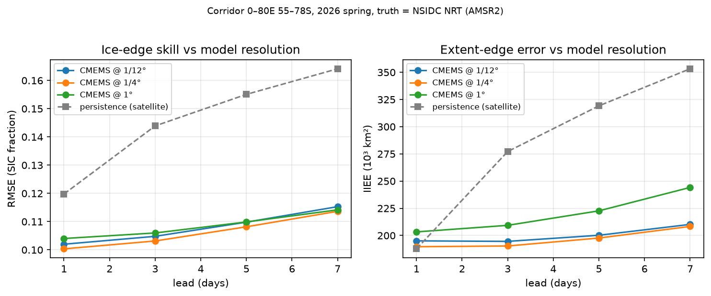

What the data showed, and what it does not prove
Every number on this page is read from a file built out of the source repository. Where a result has a known weakness, the weakness is printed next to it, and where a result went against the project, it is shown anyway.
The forecast drifts away from reality, and it drifts in days
Since 31 August 2026 a GitHub Action has saved each day's Copernicus Marine forecast for the corridor. A forecast issued on a given day can be checked against the analysis issued for the day it was forecasting.
Caution: this compares the forecast with the same system's own later analysis, not with satellite observation. It shows how fast the forecast changes its mind. It is not an accuracy score. The next panel scores the same archive against the satellite.
Against satellite truth, the raw forecast beats persistence on concentration
The bias-correction model, and the honest reading of its score
The model takes a physics model's ice field and learns the correction that moves it toward what the satellite actually measured: corrected = background + learned correction. It beats persistence (assume tomorrow looks like today), which is the baseline that is hard to beat over a few days.
The weak point is stated in the repo itself. The background used in training, GLORYS12, is a reanalysis, so it has already seen observations near the target date. Its flat error across lead times is the fingerprint of that. So these scores are an upper bound on forecast skill, not a measurement of it. The clean test is to retrain on the real forecast archive scored above, which is why that archive is collected every day.
Resolution: does a 1/12° ocean model tell the captain more?

F1 figure from the source repo (dakshin/figures/resolution_study.png).
F3: do eddies change iceberg tracks?
Iceberg drift: staying put beat the drift model
A zero that was really ice
December 2019: the station was shut most days, the approach never was
The PolarRoute run this all started from
The British Antarctic Survey's open-source planner, PolarRoute, splits the sea into a quadtree mesh: large boxes where the ice is uniform, smaller ones where it changes. A vessel model then gives each box a speed for this ship, and a shortest-path search (Dijkstra) finds the quickest way through.
Boxes are coloured by mean concentration with the WMO code; hatched boxes are closed to the ship. The mesh plans on box means, while the "worst ice on the route" figure comes from 25 km pixels, which is why one can exceed the other.